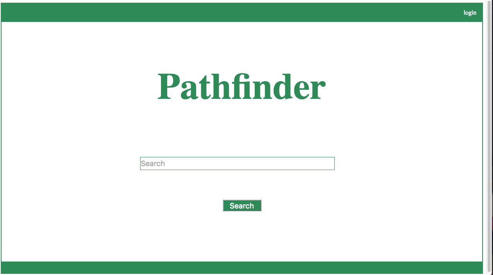
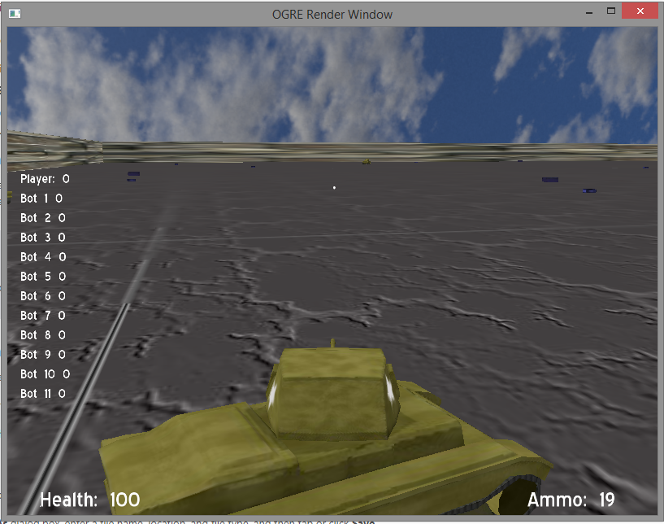
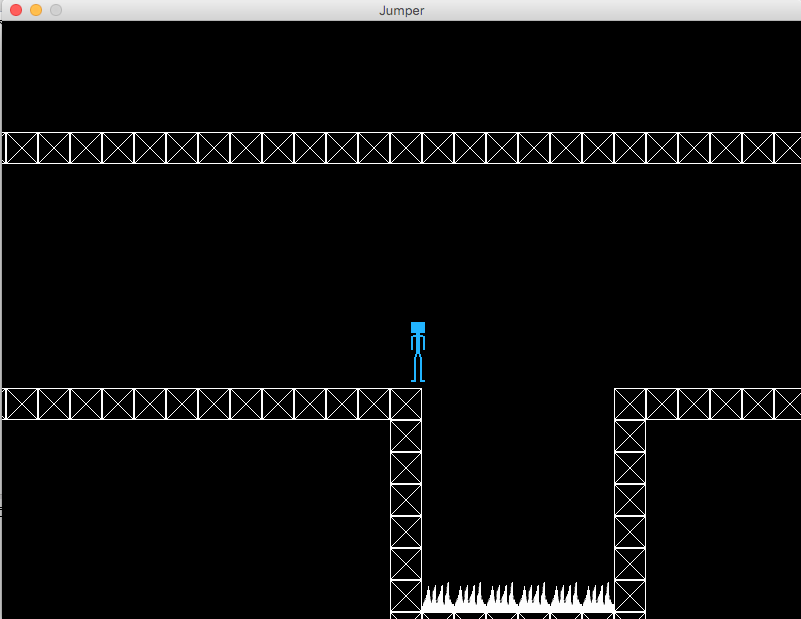
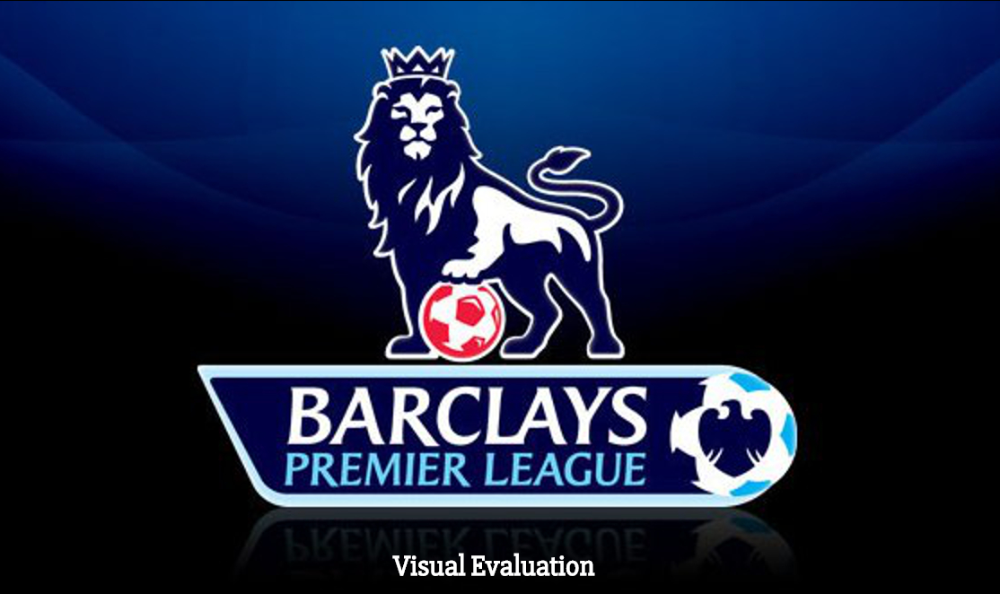
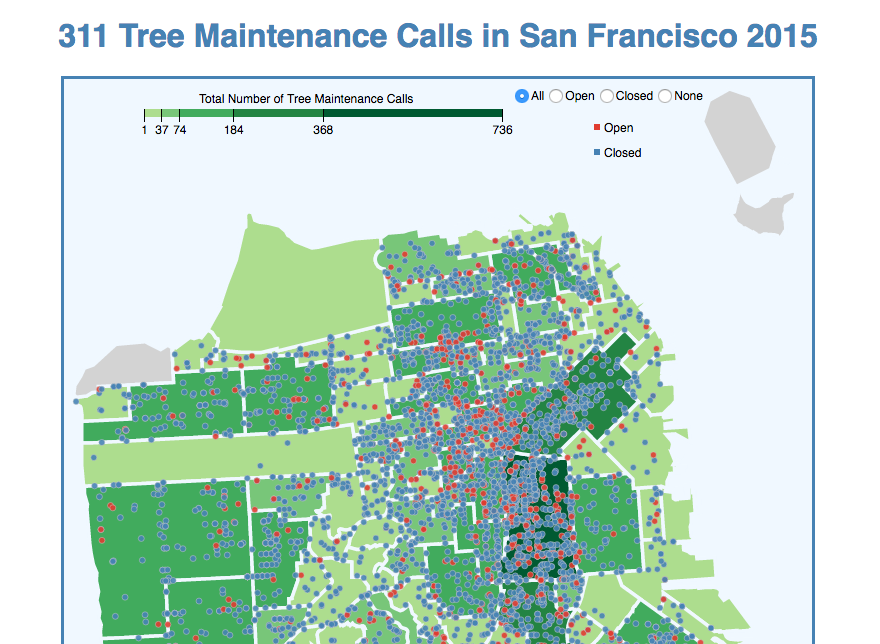
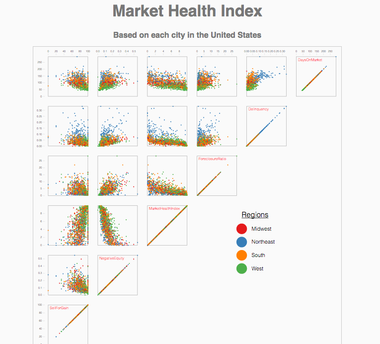

Web Development |
|
|---|---|
Search EngineThe search engine was a multi-threaded program that used Java, MySQL, JSON, and HTML/CSS. The program featured an inverted index and TF-IDF scoring to store and rank searches. The search engine featured user support that saved user information to a database. Users could: login and logoff, view and delete search history, private search, and chang their password. This program was a five-part project for my Software Development class at USF. Therefore, the repository is not public. If you wish to see the source code, I would be happy to send it. |
 |
Games |
|
Tank GameA 3D action game where the player controlled a tank and destroyed other tanks while trying to avoid being destroyed themselves. Featured collision detection, projectile management, item pickups, and AI controller for the bot tanks. Created using C++ and the OGRE graphics engine. |
 |
JumperJumper is 2D platforming game written in Java. In Jumper you play as a blue person who must avoid spikes in order to reach the end of each stage. I created levels using a free software called Tiled, and then saved the created levels as a JSON files which my program parsed. Tiled WebsiteLink to Repository |
 |
Visualizations |
|
Barclay's Premier League Visual AnalysisFor this project I visualized the performance of the different teams in the Barclay's Premier League. The project features four visualizations that analyze each team against each other based on different factors. This project used a dataset that gave stats for each match in the 2015-2016 season. JavaScript and D3.js were used in this project. Link to Visualization |
 |
San Francisco 311 Maintenance Call VisualizationVisualized San Francisco 311 Tree Maintenance Calls public dataset using JavaScript and D3.js. Parsed GeoJSON data to create a choropleth map of San Francisco and placed color-coded symbols on the map for each maintenance call. Interactive Features: Tooltips when hovering over symbols or neighborhood areas, and radio buttons to filter the display of symbol groups. Link to Visualization |
 |
Market Health Index VisualizationVisualized the Zillow's dataset on the United States Market Health Index using a scatterplot matrix. Prototypes for this dataset were made using Tableau. The actual scatterplot matrix was created using JavaScript and the D3.js library. Link to Visualization |
 |